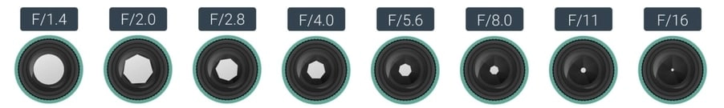
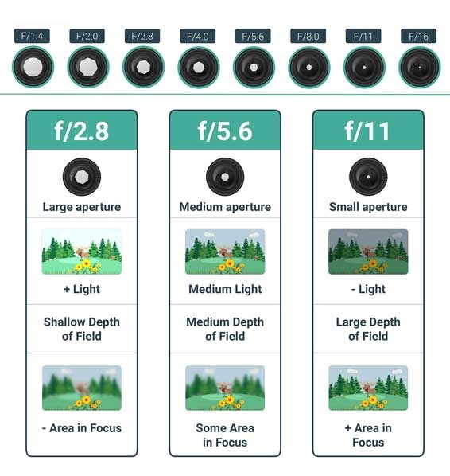
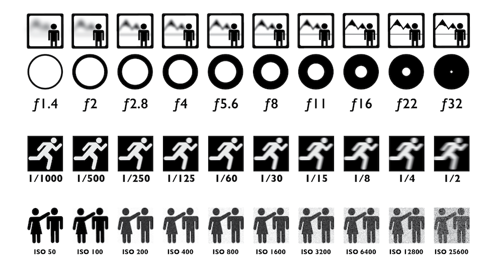
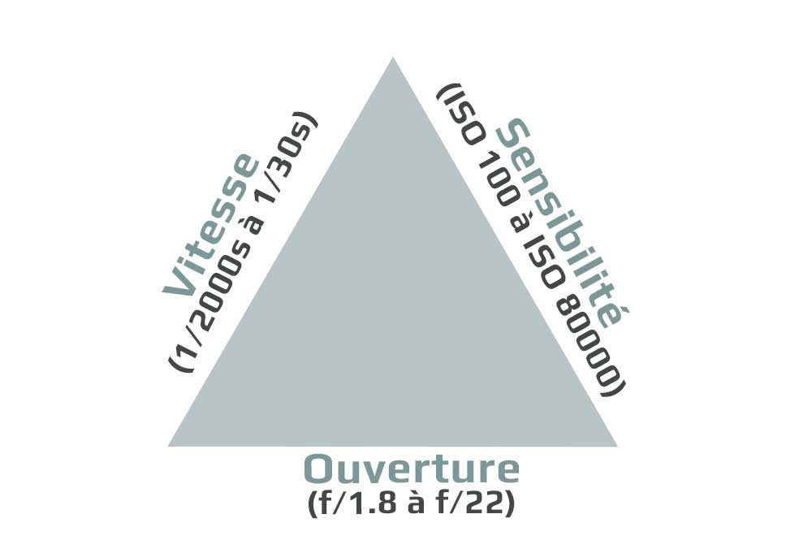
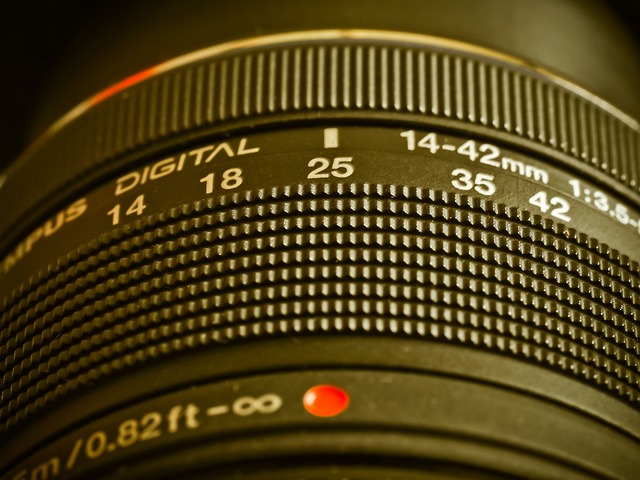
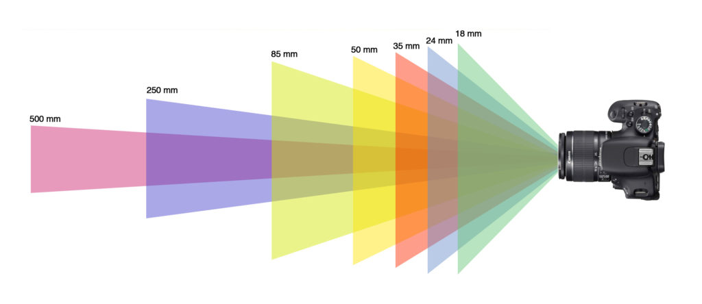
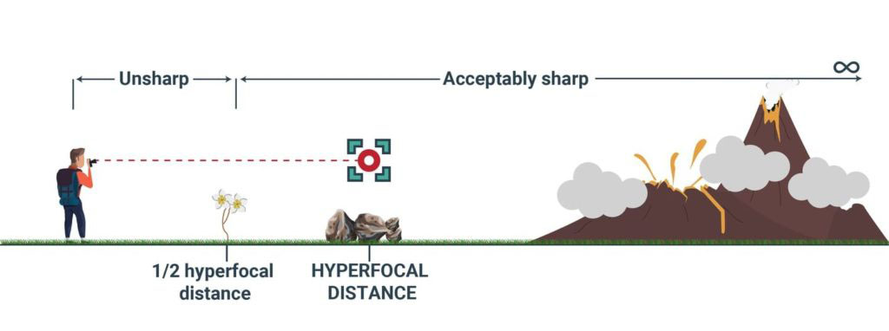
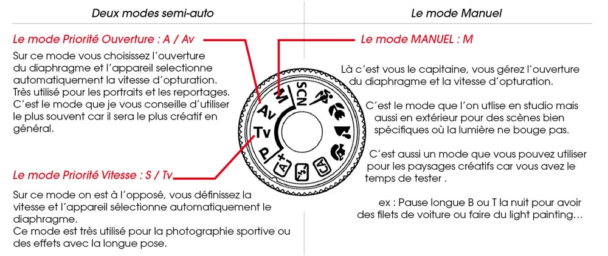
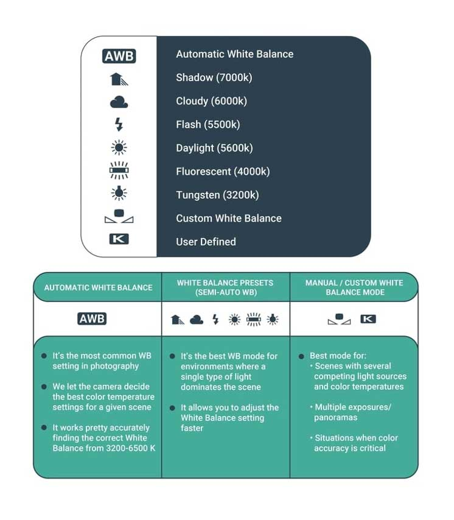

-
1. EXPOSITION
L'exposition est la base de la photographie la plus importante et le premier concept de photographie que vous devez comprendre.
La photographie consiste à capturer la lumière, et l'exposition est très importante car c'est la quantité de lumière collectée par votre appareil photo.
Les bases de l'exposition photographique sont composées de différents éléments dont nous parlerons ci-dessous, tels que l'ouverture, la vitesse d' obturation et l'ISO. La chose fondamentale à comprendre est l'effet de l'exposition, qui consiste à capturer l'image avec une luminosité déterminée (on l'appelle aussi " Valeur d'exposition ").
Idéalement, l'image doit être correctement exposée, c'est-à-dire avec la quantité parfaite de luminosité où vous pouvez voir tous les détails dans les hautes lumières et les ombres. Cependant, dans l'exposition photographique, il n'y a pas de bien ou de mal, et le choix artistique de nombreux photographes est de capturer une image sous-exposée ou surexposée. Pour l'instant, nous allons nous concentrer sur les éléments pour capturer une exposition correcte.
Les bases de l'exposition ont également d'autres effets sur l'aspect final de l'image comme la profondeur de champ, le mouvement et le bruit numérique. Nous aborderons également ce sujet tout au long de ce didacticiel sur les bases de la photographie.
-
2. OUVERTURE
L'ouverture fonctionne comme nos pupilles ; c'est l'ouverture de l'objectif de l'appareil photo, qui contrôle la quantité de lumière qui traverse l'objectif vers le capteur de l'appareil photo.
Ce concept photographique de base a un effet direct sur l'exposition ; plus l'ouverture est large, plus l'image sera lumineuse et plus l'ouverture est étroite, plus elle sera sombre. Il joue également un rôle important dans la profondeur de champ et la netteté de l'image.
Le max. et min. l'ouverture de l'objectif est définie par une valeur appelée " F-stop ". Plus le nombre F-stop est grand, plus l'ouverture est petite/étroite et vice versa. Par exemple, un F-stop de 1,4 est plus grand que 2,8, qui est plus grand que 4,0, etc.Les meilleurs paramètres d'ouverture de l'appareil photo dépendent de la lumière, du sujet que vous photographiez et de l'aspect final que vous souhaitez pour votre image.
 -
3. VITESSE D'OBTURATION
Le deuxième élément fondamental de la photographie lié aux bases de l'exposition est la vitesse d'obturation. En bref, la vitesse d'obturation est liée à la durée d'ouverture de l'obturateur de l'appareil photo et à la capture de la lumière.
Ceci a un impact significatif sur l'exposition ; une vitesse d'obturation plus courte se traduira par une image plus sombre tandis qu'une vitesse d'obturation plus longue capturera une image plus lumineuse.
La vitesse d'obturation est également un élément fondamental de la photographie pour capturer le mouvement, quelque chose de vital dans certains genres comme la photographie à longue exposition. Cela a également un effet sur le tremblement de l'appareil photo et la possibilité de prendre des photos à main levée par rapport à la nécessité d'utiliser un trépied.
Le principal moyen de mesurer la vitesse d'obturation consiste à utiliser des secondes et des fractions de seconde. Par exemple, 1/1000 de seconde est plus rapide que 1/500 de seconde, qui est plus rapide que 1/250 de seconde, etc.
Les meilleurs réglages de vitesse d'obturation dépendront de la lumière disponible et du mouvement que vous souhaitez capturer dans votre sujet.
 -
4. ISO
La dernière des bases de la photographie d'exposition est l' ISO.
En bref, l'ISO fonctionne en augmentant les informations lumineuses capturées par le capteur de l'appareil photo. Cela a un effet drastique sur l'exposition ; plus l'ISO est élevé, plus l'image sera lumineuse, et plus l'ISO est faible, plus la photo sera sombre.
Outre l'exposition, l'ISO a un effet secondaire majeur appelé « bruit numérique ». Au fur et à mesure que vous augmentez l'ISO, votre image sera plus lumineuse mais aura également plus de bruit numérique, qui est un élément important lié à la qualité de l'image.
Les principaux paramètres ISO de la caméra dépendent de la lumière disponible. Si vous photographiez dans des environnements peu éclairés ou nocturnes, vous devrez utiliser un ISO plus élevé si vous souhaitez capturer la bonne exposition. Il en va de même si vous souhaitez utiliser une ouverture étroite ou une vitesse d'obturation rapide et qu'il n'y a pas assez de lumière. Vous devrez trouver un équilibre avec les autres bases de la photographie.
-
5. TRIANGLE D'EXPOSITION
Une fois que vous avez compris les bases de la photographie en matière d'ouverture, de vitesse d'obturation et d'ISO, il est temps de les assembler !
La meilleure façon de voir comment ces éléments interagissent les uns avec les autres est d'utiliser le triangle d'exposition.
Le triangle d'exposition est inclus dans la plupart des guides de photographie pour débutants, et c'est simplement une analogie pour expliquer les effets et l'interaction des principales bases de l'exposition en photographie. Selon cela, les trois éléments doivent être en équilibre si vous souhaitez capturer une image correctement exposée. Ainsi, lorsque vous ajustez un côté du triangle, vous devrez ajuster un ou les deux autres côtés pour trouver un équilibre. Par exemple, si vous ouvrez votre ouverture, vous devrez soit réduire la vitesse d'obturation, soit diminuer l'ISO pour obtenir la même quantité de luminosité (niveau d'exposition).
L'utilisation du triangle d'exposition est l'un des meilleurs conseils de base en photographie pour les débutants, et une fois que vous l'avez compris, il est très facile de le mettre en pratique.
-
6. PROFONDEUR DE CHAMP
La profondeur de champ est simplement l'espace dans l'image qui est suffisamment net.
En photographie, on peut dire qu'il y a une faible profondeur de champ lorsqu'une petite partie du cadre est suffisamment nette, alors qu'on parle d'une grande profondeur de champ lorsqu'une grande partie du cadre est considérée comme nette.
La profondeur de champ est affectée par de nombreux facteurs différents :
- - Ouverture : Plus l'ouverture est large, plus la profondeur de champ est faible.
- - Distance focale : Plus la distance focale est longue, plus la profondeur de champ est faible.
- - Distance de mise au point : Plus le sujet est proche de l'objectif, plus la profondeur de champ est faible.
- - Taille du capteur : plus la taille du capteur de l'appareil photo est petite, plus la profondeur de champ est faible. (*avec la même distance focale).
-

7. DISTANCE FOCALE
La distance focale est liée aux bases de l'objectif de photographie.
C'est un concept photographique essentiel à comprendre pour créer vos images et choisir les objectifs dont vous aurez besoin dans votre équipement.
La distance focale fonctionne en décrivant chaque objectif en termes de millimètres du centre optique de l'objectif au capteur. Selon la longueur ou la longueur de la focale, cela aura un impact direct sur le champ de vision de vos images et sur d'autres aspects comme la profondeur de champ.
Par exemple, les focales plus courtes comme les objectifs grand angle auront un grand angle de vue , tandis que les focales plus longues comme les téléobjectifs auront un angle de vue plus étroit. La distance focale créera également différents effets, comme la distorsion dans les grands angles de vue et le grossissement dans les angles de vue plus étroits.
Tous ces éléments sont essentiels pour quiconque débute en photographie car cela affectera l'aspect final de votre sujet et de votre image.
-
8. TAILLE DU CAPTEUR
Un autre élément fondamental de la photographie pour les débutants qui est souvent négligé est la taille du capteur de l'appareil photo.
La taille du capteur de la caméra est vraiment importante. Il n'y a pas de meilleure taille de capteur absolue en photographie, mais plutôt différentes tailles de capteur pour différents besoins photographiques. La taille utilisée comme référence en photographie numérique est la taille de capteur classique de 35 mm , également appelée Full-Frame. Si le capteur est plus petit que cette taille, on dit qu'il est « recadré », et s'il est plus grand, on parle de « format moyen ». « Connaître les différents types de capteurs, leurs qualités et ce qu'ils peuvent réaliser est également crucial pour prendre les photos que vous souhaitez.
Par exemple, une règle de base en photographie de nuit est d' utiliser un capteur avec des pixels plus grands, car ceux-ci captent mieux la lumière et permettront de prendre une image de meilleure qualité avec moins de bruit numérique.
La distance focale est également importante car des capteurs plus petits offriront une plus grande portée et un plus grand grossissement pour photographier des sujets éloignés comme dans la faune ou le sport.
La profondeur de champ est le dernier effet des capteurs de la caméra. En utilisant le même champ de vision, la profondeur de champ sera plus étroite dans les caméras avec des capteurs plus grands et plus grande dans les caméras avec des capteurs recadrés. Un exemple est la photographie de portrait, où les photographes utilisent généralement des capteurs plus grands pour réduire la profondeur de champ et l'effet bokeh.
Comme vous pouvez le constater, comprendre la taille du capteur fait partie de ces bases de la photographie auxquelles vous devez prêter attention.
 -
9. FOCUS
La mise au point est une difficulté courante pour quiconque débute en photographie.
En bref, la mise au point consiste à ajuster l'objectif pour trouver le maximum de netteté, de contraste et de résolution pour un sujet choisi.
Il existe deux manières de faire la mise au point en photographie numérique :
- Mise au point manuelle : Utilisez vos mains pour ajuster la bague de mise au point jusqu'à ce que vous obteniez la meilleure mise au point.
- Mise au point automatique : Utilisation des moteurs internes de l'appareil photo et des objectifs pour faire la mise au point sur un sujet donné.
L'utilisation de la mise au point manuelle ou de l'autofocus dépendra du type de photographie que vous faites. Par exemple, dans certains genres comme la macrophotographie et la photographie de nuit, il est préférable d'utiliser la mise au point manuelle. Pourtant, dans d'autres genres, comme la faune ou les sports, l'autofocus est plus rapide et facilitera les choses.
Dans certains genres comme la photographie de paysage, vous pouvez vous concentrer sur une distance spécifique qui vous aidera à atteindre la profondeur de champ maximale (ou une netteté raisonnable). C'est ce qu'on appelle la distance hyperfocale et c'est l'une des meilleures bases de la photographie à apprendre. Il existe également des techniques plus avancées pour obtenir une netteté maximale comme le focus stacking que vous pouvez appliquer si vous avez déjà une certaine expérience.
 -
10. NETTETÉ
La netteté est un concept de photographie de base qui peut être plus technique que d'autres, mais il est plutôt facile à comprendre.
En un mot, la netteté correspond à la clarté avec laquelle les détails sont capturés et traités dans une image. De nombreux facteurs affectent la netteté d'une image, comme la résolution du capteur, l' objectif et même certaines bases de la photographie que nous avons déjà couvertes comme l'ouverture, la vitesse d'obturation et l'ISO.
Les bases de l'édition et les techniques de post-traitement sont également importantes pour obtenir plus de netteté. Les images manquent généralement de détails lorsqu'elles sont prises directement de l'appareil photo (ce que l'on appelle la "douceur" en photographie), et vous pouvez corriger cela en utilisant un logiciel de netteté. Enfin, la distance de visualisation est un autre facteur important affectant la netteté. Par définition, la perception de la netteté augmente à mesure que la distance de visualisation de l'image augmente. C'est pourquoi les panneaux d'affichage ont une très petite résolution lorsqu'on les regarde de près.
-
11. PARAMÈTRES DE L'APPAREIL PHOTO
Une fois que vous avez compris les concepts de base de la photographie , il est temps de les mettre en pratique en utilisant les principaux paramètres de photographie sur l'appareil photo !
En bref, voici les meilleurs réglages d'appareil photo pour quiconque débute en photographie :
- - Ouverture : f/1.8-f/5.6 en basse lumière ou pour une profondeur de champ plus étroite, et f/8-f/16 pour un DOF plus large
- - Vitesse d'obturation : De 30 secondes à 1/4000ème de seconde selon la scène
- - ISO : 100-3200 dans les appareils photo d'entrée de gamme, et 100-6400 dans les appareils photo plus avancés
- - Mode appareil photo : mode appareil photo manuel ou mode priorité à l'ouverture
- - Mode de mesure : Matrix/Multi/Evaluative selon votre modèle d'appareil photo
- - Mode de mise au point : AF-S pour les photos et AF-C pour les sujets en mouvement
- - Zone de mise au point : point unique pour les photos et dynamique/zone pour les sujets en mouvement
- - Balance des blancs : WB automatique
- - Format de fichier : fichier brut (ou JPEG si vous ne souhaitez pas modifier vos photos)
- - Mode d'entraînement : Prise de vue unique pour les images fixes et continue pour les sujets en mouvement
- - Réduction du bruit d'exposition longue : Désactivé
- - Réduction du bruit ISO élevée : désactivée
- - Espace colorimétrique : sRGB
- - Stabilisation d'image : activée lors de la prise de vue à main levée et désactivée lors de la prise de vue depuis un trépied
- - HDR/DRO : Désactivé
-
12. MODES DE L'APPAREIL PHOTO
Comprendre les modes de l'appareil photo est indispensable en photographie, pour vous aider à vous familiariser avec votre appareil photo et à vous améliorer en tant que photographe.
Les modes de l'appareil photo sont les commandes de l'appareil photo qui permettent au photographe de choisir les principaux paramètres d'exposition pour l'ouverture, la vitesse d'obturation et l'ISO.
Ils sont également appelés « modes de prise de vue », et ce sont les principaux modes disponibles dans la plupart des appareils photo numériques :
- - Mode Programmer l'appareil photo (« Mode P ») : En utilisant ce mode, l'appareil photo règle automatiquement la vitesse d'obturation et l'ouverture.
- - Mode Priorité à l'obturation (« Mode Tv/S » ) : Vous réglez la vitesse d'obturation et l'appareil photo sélectionne l'ouverture.
- - Mode priorité à l'ouverture (« Mode Av/A ») : Vous réglez l'ouverture et l'appareil photo règle la vitesse d'obturation.
- - Mode manuel de l'appareil photo ("Mode M") : vous définissez tous les paramètres principaux sur l'appareil photo.
L'utilisation de chaque mode dépendra de votre sujet et de vos compétences photographiques, mais généralement, apprendre quand utiliser les différents modes de l'appareil photo est une connaissance de base de la photographie.
-
13. MODES DE MESURE
Les modes de mesure sont un autre élément fondamental de la photographie.
Les modes de mesure sont simplement la façon dont votre appareil photo calcule la lumière disponible de la scène. En photographie, cela peut être fait à l'aide du posemètre intégré à l'appareil photo ou d'un appareil portable.posemètre
Comprendre le fonctionnement de la lumière en photographie est un concept de base que tout photographe doit connaître, et c'est la première étape pour apprendre les différentes façons dont votre appareil photo peut calculer la lumière de la scène.
Voici les modes de mesure de base pour calculer la lumière dans la plupart des appareils photo numériques :
- - Multi/Matrix metering : Ce mode évalue la lumière de toute la scène en divisant le cadre en différentes zones.
- - Mesure pondérée centrale : Ce mode utilise le centre du cadre pour mesurer la lumière de la scène.
- - Mesure spot : En utilisant ce mode, l'appareil photo utilise un seul point AF pour lire la lumière.
Par défaut, l'une des techniques de photographie de base dans tout appareil photo reflex numérique ou sans miroir consiste à utiliser la mesure multi/matrice , qui sera précise dans la plupart des situations. Cependant, dans certains scénarios particuliers, vous pouvez bénéficier de l'utilisation de la mesure centrale ou ponctuelle.
Vous pouvez consulter quelques exemples dans l'infographie de base de la photographie ci-dessous liée aux principaux modes de mesure de l'appareil photo.
-
14. MODES ET ZONES DE MISE AU POINT
Vous ne pouvez pas apprendre les bases de la photographie sans comprendre le fonctionnement des modes et des zones de mise au point.
Les modes de mise au point vous aident à décider si vous souhaitez que l'appareil photo verrouille la mise au point sur un sujet ou continue de régler la mise au point lorsque le sujet se déplace dans le cadre. Les deux principaux modes de mise au point sont :
- Mode autofocus unique (AF-S/One-shot AF) : L'appareil photo verrouille la mise au point sur un sujet et, si le sujet bouge, vous devrez appuyer à nouveau sur le bouton de mise au point et répéter le processus.➜ Idéal pour les photos, les paysages , macro, astro, etc.
- Mode autofocus continu (AF-C/AI-Servo) : après la mise au point, l'appareil photo suit le sujet lorsqu'il se déplace dans le cadre. ➜ Idéal pour l'action, la faune, les sports, la rue, etc.
En vous déplaçant dans les zones de mise au point, celles-ci vous aideront à définir où l'appareil photo cherche à se concentrer dans une scène.
Pour ce faire, votre appareil photo utilise différents points de mise au point et la technologie AI. Dans certains genres, l'utilisation d'un domaine d'intérêt spécifique est fondamentale. C'est pourquoi les zones de mise au point sont l'une des bases de la photographie animalière et sont également essentielles dans d'autres genres comme la photographie de sport ou de rue.
Voici les principaux domaines d'intervention en photographie :
- - Mode de zone de point unique : Vous pouvez sélectionner un seul point AF. ➜ Idéal pour le paysage, les portraits fixes, la macro et l'architecture.
- - Mode zone dynamique : Si votre sujet bouge, votre appareil photo utilisera plusieurs points AF pour le suivre. ➜ Idéal pour la faune, les sports et la rue.
- - Mode de zone automatique : L'appareil photo choisit automatiquement les meilleurs points de mise au point. ➜ Idéal pour les scènes où vous devez vous concentrer sur quelque chose de facile et proche de la caméra.
15. BALANCE DES BLANCS
La balance des blancs est l'une de ces bases de photographie faciles à comprendre.
La balance des blancs est un concept photographique visant à capturer des couleurs précises dans votre image sans être affecté par la couleur de la source lumineuse. La balance des blancs est liée à la température de couleur, qui est mesurée en « Kelvins » ou « K ». Plus le nombre K est élevé, plus la couleur sera froide. Dans votre appareil photo, vous aurez plusieurs options de balance des blancs :
- - Balance des blancs automatique (AWB) : La caméra ajuste automatiquement le meilleur réglage de caméra WB.
- - Préréglages de la balance des blancs (Balance des blancs semi-automatique) : L'appareil photo comprend différents modes prédéfinis liés à différentes températures de couleur.
- - Réglage manuel de la balance des blancs de l'appareil photo (mode de balance des blancs personnalisée) : vous pouvez régler manuellement la balance des blancs en créant une balance des blancs personnalisée ou en définissant un nombre Kelvin spécifique.
L'un des meilleurs conseils de base en photographie consiste à régler la balance des blancs sur automatique. Heureusement, la balance des blancs est un paramètre que vous pouvez modifier en post-traitement sans affecter la qualité de l'image, tant que vous photographiez en Raw.
-
16. HISTOGRAMME
L' histogramme est un concept photographique que la plupart des débutants en photographie trouvent intimidant. Cela ressemble à des mathématiques complexes mais, croyez-moi, c'est très facile à comprendre et l'un des outils les plus utiles de votre appareil photo.
En quelques mots, l'histogramme n'est qu'une représentation graphique des niveaux d'exposition au sein d'une image. En utilisant l'histogramme, vous pourrez voir une représentation plus précise des hautes lumières et des ombres de votre image.
La lecture de l'histogramme vous aidera à voir si votre image est correctement exposée ou sous/surexposée.
-
17. COMPOSITION
Au-delà des paramètres de photographie, de l'équipement et d'autres aspects techniques, si vous voulez que vos photos parlent d'elles-mêmes, il faut maîtriser la composition.
La composition est le langage de la photographie, et en utilisant différents éléments et règles de composition, vous serez en mesure de capturer et de façonner votre message visuel. Lorsque vous composez votre image, vous devez disposer les éléments de la scène pour les rendre attrayants pour le spectateur. Cela vous aidera également à représenter votre message visuel de la manière la plus harmonieuse et la plus percutante.
La composition peut être décomposée en différentes parties
- - Règles : La règle de base de la photographie des tiers, le triangle d'or, la règle de l'espace, la spirale d'or, la règle des cotes, etc.
- - Éléments : Les lignes directrices, les courbes, les formes géométriques, les couleurs, etc.
- - Techniques : La symétrie, l'équilibre, la répétition, les motifs, l'échelle, etc.